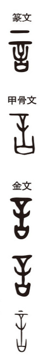

言

language
Kun: koto, i(u) | On: gen, gon
word, speech, statement, language, to say
Explanation
The earliest form of 言 shows not simply speech, but the solemn words of an oath. In oracle bone and bronze inscriptions, the character depicts a vessel for holding the covenantal words, with 辛 placed above it. 辛 was the large tattooing needle used in punitive tattooing, indicating the penalty imposed if one violated the sworn declaration. Thus 言 originally denoted words spoken before the gods in a binding pledge, words guaranteed by ritual and punishment. From this sacred and juridical sense, the character broadened to mean speech, words, and expression in general.